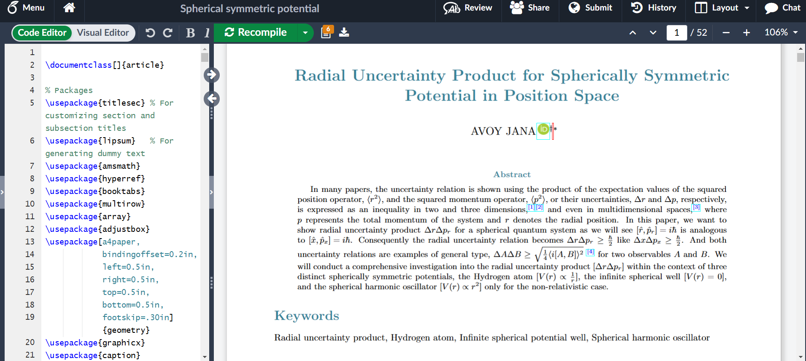

ACADEMIC PROFILE
____ ___ ____ _
(___ \ / _ \ (___ \ / |
__) )| | | | __) ) / o |_
/ __/ | | | | / __/ /__ _)
| |___ | |_| || |___ | |
|_____) \___/ |_____) |_|

Mr. AVOY JANA
BSc (Vidyasagar University), Msc (IIT Delhi)
JAM Q (2023) , CSIR NET(2024) LS Q, CSIR NET(2025) JRF Q ∀ Q = Qualified
About
Hello! I am Avoy Jana, persuing Masters in Physics in Indian Institute of Technology, Delhi. I am trying to conserve my all works, being embedded in this webpage. Me, always an average student, but a good explorer in viewpoint of Physics, I think. Ever I grow up, I work hard and harder while my certificates are lacking numbers. In region of interest, I can spend a month for a problem, until it's solved. Solution tells, "it's easy now not before", make me a "Believer".
CV and SoP
Curriculam Vitae (CV)
Statement of Purpose (SoP)
Respected prof., I'm Avoy Jana, perusing Masters in Indian Institute of Technology, Delhi (ITTD) and the discipline is Physics. If you ask me to describe myself in one-two lines, I have used to mention [Me, always an average student, but a good explorer in viewpoint of Physics, I think. Ever I grow up, I work hard and harder while my certificates are lacking numbers. In region of interest, I can spend a month for a problem, until it's solved. Solution tells, ``it's easy now not before", make me a ``Believer".]<\p>
The best thing I can do is always I hang myself in mathematical flow of a particular physics problem, then floated a few days. I would like to say of a few mathematical expertise, so called mathematical physics with examples such as the special function (Hermite, Legendre, Bessel, Laguerre, hyper-geometric) including probability distribution (Gamma, Beta, Bernoulli, Binomial, Poisson, Normal), complex integration (poles, branch cuts), integral transforms (Fourier, Laplace, Hankel), multi-dimensional approach (spherical, cylindrical).
A long work, I have done, written a book (300 pages on latex pdf) on free space Green function, where I have computed Green functions in various techniques of the electrical circuits, Laplace equation, Helmholtz and modified Helmholtz equation, heat equation, thermal wave and wave equation, Klein-Gordon equation, telegrapher equation, dissipative Klein-Gordon equation. I feel expert in complex integration for inverse Fourier and inverse Laplace (Bromwich integral), especially branch cut techniques. In this book, I have also computed multi-dimensional Green functions, radially symmetric Green function, Green functions of bi-harmonic equations, vector equations and applications of Green functions in physics. The whole works taught me to be patient and stick with unsolved ones.
Additionally I'm willing to mention about my first attempt to write an article (50 pages on latex pdf), named `` Radial Uncertainty Product for Spherically Symmetric Potential in Position Space ", where I have worked out ``by hand calculations" for radial uncertainty product for the hydrogen atom, infinite spherical well, spherical harmonic oscillator. After completing it, I have also done for circular symmetric potential and now I'm working with the multi-dimensional case (spherical for hydrogen atom, infinite well, harmonic oscillator and cylindrical, only for infinite well), computation of multi-dimensional radial operators, expectation values related to radial uncertainty product ``by hand" is a challenge to me now. I understand, these works are totally unnecessary in view point of theoretical high energy physics, but I want to keep busy me always in some mathematical problems before laziness covers me.
In graduate, I have done with three times, the numerical methods and computing (python) under Dr. Abhijit Kar Gupta and in post-graduate, I have done a course, Numerical and Computational Methods in Research (NCMR) under Dr. Amita Das. As a course work, I have made some models on numerical band solutions for arbitrary periodic potentials, random walk simulation, design of the syntax cubic spline interpolation. And I have a hand in Mathematica, Linux OS and additionally wiling to say, I have designed a personal webpage.
In course work of IITD, I have done group theory (GT) by Dr. Sarthak Parikh, quantum field theory (QFT) by Dr. Tarun Sharma, and aim to take general theory of relativity (GTR) by Dr. Suprit Singh, high energy physics (HEP) by Dr. Tarun Sharma. I think I can fulfill the prerequisites in some understanding level for a Ph.d. in theoretical high energy physics.
My ongoing project work in Masters is `` Some aspects of BSM (Beyond Standard Model) physics through dark matter problem" under Dr. Pradipta Ghosh. For that purpose, I have going through the Standard Model (SM), mainly flavor symmetry, Lagrangian formalism in QFT, Abelian, non-Abelian Gauge theories, Higgs mechanism, a picture of SM, for BSM, till now I have only keep studying two Higgs Doublet Model (2HDM). The total reason for taking this type of project work to just build up the basic concepts (advanced for me, a newer in subject) behind the theoretically high energy physics.
The research effort of the high energy theory group covers a wide range of fields, while I'm highly interested in the phenomenology of the Standard Model and beyond of it, to pursue the doctor of philosophy. As a result, I find you, respected prof., if currently you are working on this topic or something related to it, and if any Ph.d. opportunity available from you, please inform.
Regards,
Avoy Jana
MSc (Indian Institute of Technology, Delhi, New Delhi, 110016)
Connection
•Linkedin • ResearchGate • Orcid • ResearchGate • Github
Research Interests
• High Energy Physics (Phenomenology) • Mathematical Physics
Ongoing Book
Free Space Green Functions of LPDEs through Integral Transform Techniques, Avoy Jana
Ongoing Publications
Radial Uncertainty Product for Spherically Symmetric Potential in Position Space, Avoy Jana
Modelling Physics Project
Simulations
1D Diffusion problem using Random walk
Number of particles, N = 100000 , unit step-size, Δx = 1.0 , unit step-time, Δt = 0.5
Diffusion coefficient, D = Δx2/2Δt, <x2> = 2Dt where t = total time
2D Diffusion problem using Random walk
Number of particles, N = 10000, unit step-size, Δx = Δy = 1.0, unit step-time, Δt = 0.5
Diffusion coefficient, D = Δx2/2Δt, <r2> = 4Dt where t = total time

Coding Skill
HTML+CSS
- üîµ This Web page
- üîµ Enjoy Arijit Singh's world
- üîµ It's RUPAM ISLAM !
- üîµ Alarm Clock
- üîµ Randomly pick Rabindra Sangeet
- üîµ CSIR NET Mock Test 1 : Physical Science
- üîµ CSIR NET Mock Test 2 : Physical Science
PYTHON
I have created a Python debugger here, you can give any input and see the output. All the code is available on my GitHub page.
MY NOTES
I'm trying to making subject's notes in more intuitive way, rather than a represntative way.
1. Newtonian Mechanics (NM)
2. Classical Mechanics (CM)
PHYSICS E-BOOK
These are collapsible content, click here.
These are collapsible content, click here.
- Goldstien
- JC Upadhyaya
- Rana & Joag
- YK Lim
- Peskin & Schroeder
- Mark Srednicki
- Ashok Das Lectures
- Table of Integrals, Series and Products by Gradshteyn & Ryzhik
- A treatise on the Theory of Bessel Function by G.N. Watson
- Green's function with application by Dean G. Duffy
- Table of Integral Transform Vol. I by A. Erdelyi
- Table of Integral Transform Vol. II by A. Erdelyi
- Method of Theoritical Physics by Morse, Feshbach
- Integral Transform Techniques for Green’s Function by Kazumi Watanabe
- Higher Transcendental Functions Vol. I by Erde'lyi, Wilhelm Magnus, Fritz Oberhettinger, Francesco G. Tricomi
- Higher Transcendental Functions Vol. II by Erde'lyi, Wilhelm Magnus, Fritz Oberhettinger, Francesco G. Tricomi
- Higher Transcendental Functions Vol. III by Erde'lyi, Wilhelm Magnus, Fritz Oberhettinger, Francesco G. Tricomi
- Statistical Inference by Casella & Berger
- Numerical Mathematics and Computing by E ward cheney and David kincaidr
Classical Mechanics
Quantum Field Theory
High Class Mathematics
Statistics and Probability
Numerical Methods
HEP (Phenomenology) Reference
These are collapsible content, click here.
These are collapsible content, click here.
- PT-symmetric quantum mechanics by Carl M. Bender, Daniel W. Hook
- Gauge Theory of Elementary Particle Physics by Cheng, Li (Standard Textbook)
- Local Gauge Symmetries by Gaurang Tawde (Good description of U(1), SU(2), SU(3))
- The Standard Model and Higgs physics by Ezio Torassa
- On Higgs mass generation mechanism in the Standard Model by V. A. Bednyakov, N. D. Giokaris, A.V. Bednyakov(Simple crystal clear description)
- Standard Model: An Introduction by S. F. Novaes
- Higgs mechanism in the general Two-Higgs-Doublet Model by Degée, Audrey (Potential description)
- Cornering the Two Higgs Doublet Model Type II by Oliver Atkinson, Matthew Black, Alexander Lenz, Aleksey Rusov, James Wynne (Type II 2HDM - Main )
- Theory and phenomenology of two-Higgs-doublet models by G. C. Branco, P. M. Ferreira, L. Lavoura, M. N. Rebelo, Marc Sher, Joao P. Silva (Main Ref. 3)
- Strong First Order Electroweak Phase Transition in the CP-Conserving 2HDM Revisited by P. Basler, M. Krause, M. Muhlleitner, J. Wittbrodt, A. Wlotzka (Main Ref. 19)
- Revisiting wrong sign Yukawa coupling of type II two-Higgs-doublet model in light of the recent LHC data by Lei Wang, Hong-Xin Wang, Xiao-Fang Han (Main Ref. 23)
- Comparative Studies of 2HDMs under the Higgs Boson Precision Measurements by Tao Han, Shuailong Li, Shufang Su, Wei Su, Yongcheng Wu (Main Ref. 24)
- TASI 2014 Lectures: The Hunt for Dark Matter by Graciela B. Gelmini (Pradipta suggested)
- Metastable Conformal Dark Matter by Philippe Brax, Kunio Kaneta, Yann Mambrini, Mathias Pierre (Pradipta suggested)
CPT transformations
Gauge Theory
Higgs Mechanism
Standard Model
Two Higgs Doublet Model
Dark Matter Problem
Contact
If you would like to get in touch, please contact me via email at avoyjana2000@gmail.com.
Place: Room ED-09, Girnar House, IITD
Phone: Mail me to Connect Hosted : 05th March, 2024 Last Updated : 6th Nov, 2024
© 2024 Mr. AVOY JANA. All rights reserved.